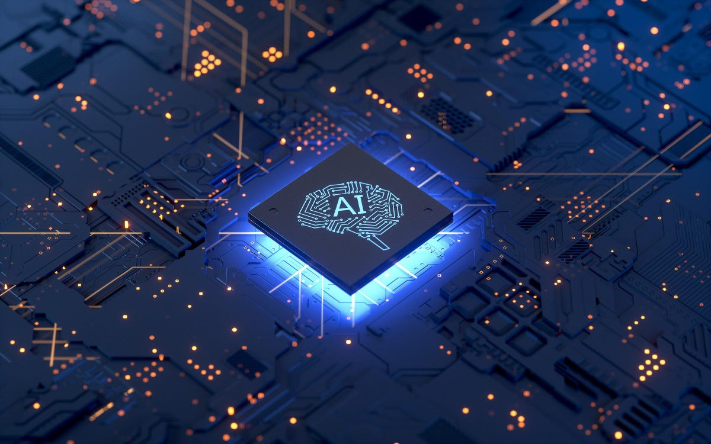

Apa itu Artificial Inteligence?

Pengertian AI
Kecerdasan buatan adalah kecerdasan yang ditambahkan ke suatu sistem yang dapat dikelola dalam konteks ilmiah, bisa juga disebut kecerdasan buatan (bahasa Inggris: Artificial Intelligence) atau disingkat AI, yang didefinisikan sebagai kecerdasan entitas ilmiah. Andreas Kaplan dan Michael Haenlein mendefinisikan kecerdasan buatan sebagai "kemampuan sistem untuk menafsirkan data eksternal dengan benar, belajar dari data itu, dan menggunakan pembelajaran itu untuk mencapai tujuan dan tugas tertentu melalui adaptasi yang fleksibel."
Sistem seperti itu biasanya dianggap komputer. Kecerdasan diciptakan dan dimasukkan ke dalam mesin (komputer) untuk menyelesaikan pekerjaan seperti manusia. Beberapa bidang di mana kecerdasan buatan digunakan antara lain sistem pakar, permainan komputer (games), logika fuzzy, jaringan saraf tiruan, dan robotika
Meskipun kecerdasan buatan memiliki konotasi sci-fi yang kuat, itu merupakan cabang yang sangat penting dari ilmu komputer, berurusan dengan perilaku cerdas, pembelajaran, dan adaptasi dalam mesin. Penelitian kecerdasan buatan melibatkan pembuatan mesin dan program komputer untuk mengotomatisasi tugas yang memerlukan perilaku cerdas. Contohnya termasuk kontrol, perencanaan dan penjadwalan, kemampuan untuk menjawab diagnosa dan pertanyaan pelanggan, dan tulisan tangan, suara, dan pengenalan wajah. Masalah-masalah ini telah menjadi disiplin tersendiri, berfokus pada penyediaan solusi untuk masalah kehidupan nyata. Sistem AI sekarang banyak digunakan di bidang ekonomi, sains, kedokteran, teknik, dan militer, dan telah dibangun ke dalam beberapa aplikasi perangkat lunak komputer rumahan dan video game.
Metode AI
- Sistem Pakar
- Petimbangan Berdasar Kasus
- Jaringan Bayesian
- Ai Berdasarkan Tingkah Laku
Fiksi Sains
Dalam fiksi ilmiah, kecerdasan buatan biasanya digambarkan sebagai kekuatan masa depan yang akan mencoba menggulingkan otoritas manusia, seperti HAL 9000, Skynet, Colossus, dan The Matrix, atau menyamar sebagai manusia untuk menyediakan layanan, seperti C-3PO, data, 200 Pemuda, mecha di AI, atau Sonny di "Me, Robot". Kecerdasan buatan yang tak terhindarkan untuk menguasai dunia kadang-kadang disebut "singularitas"
Sejarah Artificial Inteligence

Pada awal abad ke-17, René Descartes percaya bahwa tubuh hewan tidak lebih dari mesin yang kompleks. Blaise Pascal menemukan komputer digital mekanik pertama pada tahun 1642. Pada usia 19 tahun, Charles Babbage dan Ada Lovelace sedang mengerjakan komputer mekanik yang dapat diprogram.
Bertrand Russell dan Alfred North Whitehead menerbitkan Principia Mathematica, yang merombak logika formal. Warren McCulloch dan Walter Pitts menerbitkan "Kalkulus Logis Gagasan yang tetap ada dalam Aktivitas " pada 1943 yang meletakkan fondasi untuk jaringan saraf.
Tahun 1950-an adalah periode upaya aktif di bidang kecerdasan buatan. Program kerja AI pertama ditulis pada tahun 1951 untuk menjalankan mesin Ferranti Mark I dari University of Manchester (UK): program pemutar naskah yang ditulis oleh Christopher Strachey dan program permainan catur yang ditulis oleh Dietrich Prinz. John McCarthy menciptakan istilah "kecerdasan buatan" pada konferensi pertama tentang subjek ini yang diselenggarakan pada tahun 1956. Dia juga menemukan bahasa pemrograman Lisp. Alan Turing memperkenalkan "Turing Test" sebagai cara untuk mencapai pengujian perilaku cerdas. Joseph Weizenbaum membangun ELIZA, sebuah chatbot menggunakan psikoterapi Rogerian.
Pada tahun 1960-an dan 1970-an, Joel Moses mendemonstrasikan kemampuan penalaran simbolik untuk mengintegrasikan masalah dalam program Macsyma, program matematika berbasis pengetahuan pertama yang berhasil. Marvin Minsky dan Seymour Papert menerbitkan Perceptrons, menunjukkan keterbatasan jaringan saraf sederhana, dan Alain Colmerauer mengembangkan bahasa komputer Prolog. Ted Shortliffe mendemonstrasikan kemampuan sistem berbasis aturan untuk representasi pengetahuan dan penalaran dalam diagnosis dan pengobatan medis.Sistem ini kadang-kadang disebut sebagai sistem pakar pertama. Hans Moravec mengembangkan kendaraan yang dikendalikan komputer pertama yang secara mandiri dapat mengatasi hambatan jalan yang kusut.
Filosofi
Perdebatan tentang kecerdasan buatan yang kuat dan kecerdasan buatan yang lemah masih menjadi topik hangat di kalangan filsuf kecerdasan buatan. Ini melibatkan filsafat spiritual dan masalah fisik dan mental. Roger Penrose, dalam eksperimen pemikiran "The Emperor's New Thinking" dan "Chinese Space" John Searle, percaya bahwa kesadaran sejati tidak dapat diwujudkan melalui sistem logika formal, sementara Douglas Hofstadt dan Escher Er, Bach, dan Daniel Dennett dari Godel menyatakan dukungan mereka. sebagai fungsionalisme dalam interpretasi kesadaran.
Sistem Cerdas
Sistem pakar adalah program komputer yang berisi pengetahuan tentang bidang tertentu dari satu atau lebih pakar manusia. Jenis program ini pertama kali dikembangkan oleh peneliti kecerdasan buatan pada tahun 1960-an dan 1970-an, dan dikomersialkan pada 1980-an. Bentuk umum sistem pakar adalah program yang didasarkan pada seperangkat aturan yang menganalisis informasi tentang jenis masalah tertentu (biasanya disediakan oleh pengguna sistem) dan analisis matematis dari masalah tersebut. Menurut desain, sistem pakar juga dapat merekomendasikan tindakan bagi pengguna untuk menerapkan koreksi. Sistem ini menggunakan kemampuan penalaran untuk menarik kesimpulan.
Kelebihan Sistem Pakar
- Memungkinkan orang awam bisa mengerjakan pekerjaan para ahli.
- Bisa melakukan proses secara berulang secara otomatis.
- Menyimpan pengetahuan dan keahlian para pakar.
- Meningkatkan output dan produktivitas.
- Meningkatkan kualitas.
- Mampu mengambil dan melestarikan keahlian para pakar (terutama yang termasuk keahlian langka).
- Mampu beroperasi dalam lingkungan yang berbahaya.
- Memiliki kemampuan untuk mengakses pengetahuan.
- Memiliki reliabilitas.
- Meningkatkan kapabilitas sistem komputer.
- Memiliki kemampuan untuk bekerja dengan informasi yang tidak lengkap dan mengandung ketidakpastian.
- Sebagai media pelengkap dalam pelatihan.
- Meningkatkan kapabilitas dalam penyelesaian masalah.
Kekurangan Sistem Cerdas
- Biaya yang diperlukan untuk membuat dan memeliharanya relatif mahal karena diperlukan banyak data.
- Dibutuhkan admin khusus yang selalu memperbaharui pengetahuan pada sistem pakar sesuai perkembangan di bidang keahliannya.
- Pengembangan perangkat lunak sistem pakar lebih sulit dibandingkan perangkat lunak konvensional.
- Sulit dikembangkan.
- Membutuhkan waktu yang lama untuk membuatnya.